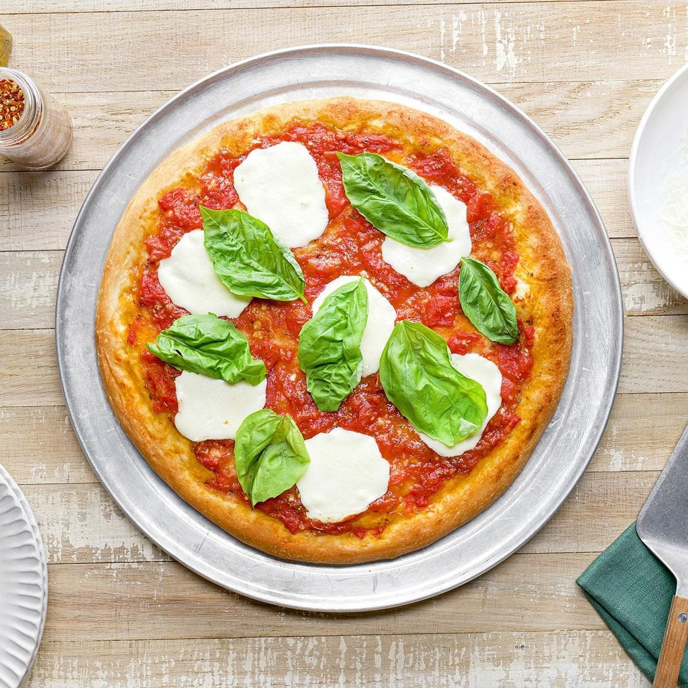

Go Back
Pizza

Pizza is a traditional italian dish. However, there are many representations from different
cultures and cooking styles. You may expirement however you like with different toppings and
cooking techniques. The following recipe will be one you can build off of with your own style!
Ingredients
- Pizza dought (store-bought or homemade)
- Tomato sauce (or pesto if you prefer)
- mozzarella cheese
- Garlic and olive oil
- Toppings of choice like pepperoni, mushrooms, bell peppers, etc
Steps
- Prep the Base Stretch or roll out your dough into your desired shape.
- Add the Sauce Spread a thin layer of tomato sauce evenly over the dough. Not too much, or it'll get soggy.
- Layer the Cheese Sprinkle a good amount of mozzerella all over.
- Add Toppings Pile on your favorites like pepperoni, veggies, or more.
- Bake it Up Bake in a hot oven until the crust is golden and the. cheese is bubbly and slightly browned.
- Finish Strong Brush the crust with a little garlic olive oil and sprinkle herbs on top. Slice it up and your done.